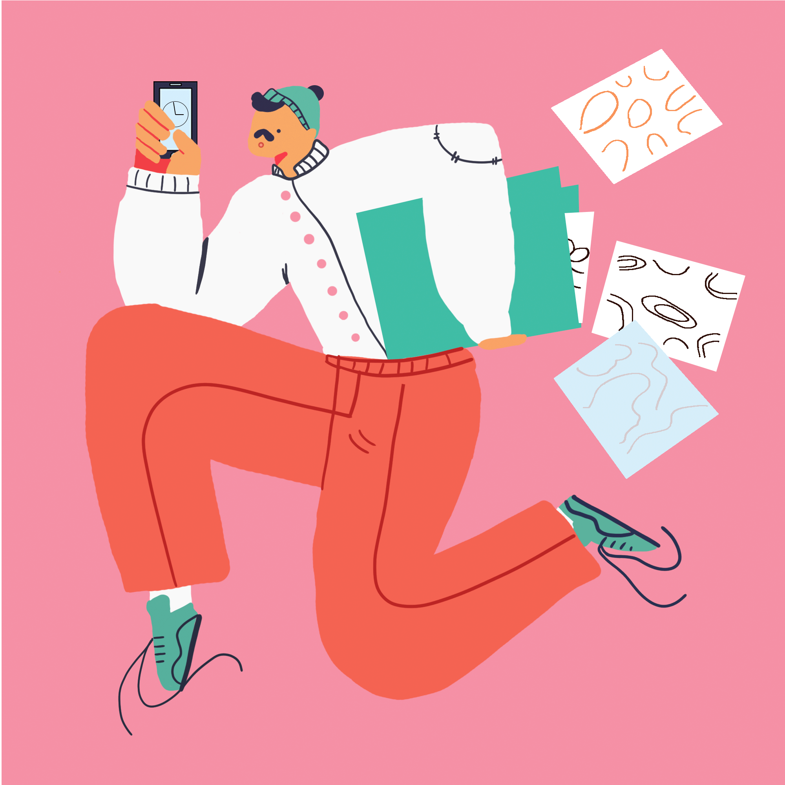
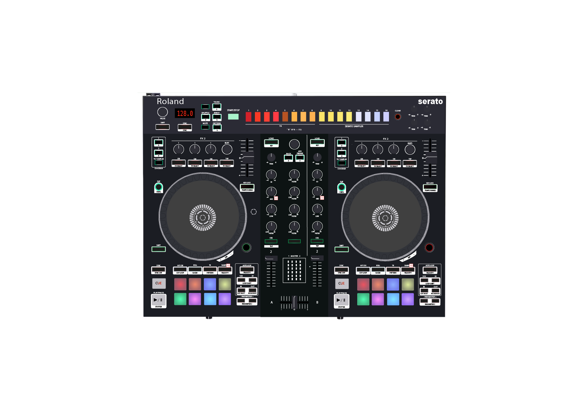
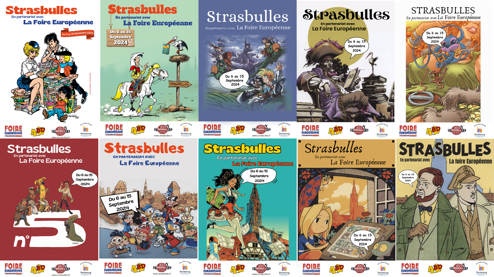

Ici l'objectif était de créer une affiche avec un thème imposé.
Ici l'objectif était de créer une affiche avec un thème imposé.
 Proposition d'une identitée visuel pour un client fictif qui vend de l'équipements de montagne été / hiver .
Proposition d'une identitée visuel pour un client fictif qui vend de l'équipements de montagne été / hiver .
 Incrustaion d'une image réel avec un monde Apocalypse
Incrustaion d'une image réel avec un monde Apocalypse

Réalisation d'un GIF à l'aide de plusieurs images sur Photoshop

Reproduction d'une Platine à l'aide d'Illustrator

Pour le festival de bandes dessinées Strasbulles, j'ai réutilisé les affiches des anciennes éditions pour promouvoir le Festival 2024